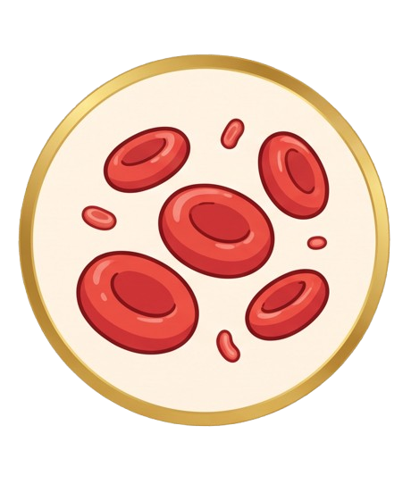
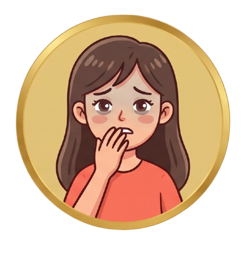
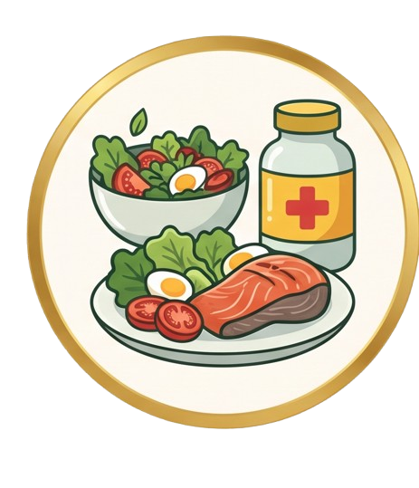

APAKAH KAMU SERING MERASA LELAH ATAU PUCAT? CEK KEMUNGKINAN ANEMIA SEKARANG!
Kenali gejala anemia secara dini lewat kuis singkat!
MULAI JAWAB KUIS SEKARANG!Kenali gejala anemia secara dini lewat kuis singkat!
MULAI JAWAB KUIS SEKARANG!

Anemia adalah kondisi dimana jumlah
darah merah atau hemoglobin dalam
darah berkurang, sehingga mengurangi kemampuan darah untuk membawa
oksigen ke jaringan tubuh.

Gejala utama: Mudah lelah,
pucat, sesak napas, pusing,
jantung berdebar-debar.

Penting diketahui: Kekurangan
zat besi, vitamin B12, atau
asam folat
Aplikasi CounterAnemia dirancang dengan fitur-fitur terintegrasi yang langsung menjawab kebutuhan para pengguna di lapangan. Fitur analisis nutrisi makanan melalui foto menjadi yang paling diminati oleh 56,9% responden untuk memantau asupan zat besi harian secara praktis berbasis kecerdasan buatan. Untuk mengatasi masalah sering lupa jadwal minum, fitur pengingat minum TTD diminati oleh 51% responden. Sementara itu, integrasi fitur kalender menstruasi serta edukasi harian masing-masing diminati oleh 49% responden. Fitur pendukung seperti chatbot AI untuk konsultasi kesehatan dan kuis tes mandiri risiko anemia turut memperkuat ekosistem digital ini. Pendekatan interaktif ini selaras dengan temuan ilmiah dalam Medic Nutricia Journal serta Journal of Pediatric and Pediatric Nursing yang membuktikan bahwa media digital interaktif secara signifikan mampu meningkatkan pengetahuan dan kepatuhan remaja putri dalam mengonsumsi TTD. Keberhasilan model platform terintegrasi ini juga didukung oleh pembelajaran dari aplikasi OKY yang diulas Universitas Airlangga, di mana pendekatan ramah remaja terbukti efektif meningkatkan literasi kesehatan reproduksi. Begitu pula kajian dalam Journal of Social and Political Sciences UPH dan laporan STIKES DHB yang menegaskan bahwa promosi kesehatan modern harus bergeser dari sekadar pembagian suplemen gratis menuju pendampingan teknologi yang berkesinambungan guna mengubah pola pikir dan perilaku masyarakat.
belum ada
Web CounterAnemia ini dirancang dengan memiliki keunggulan Fitur-fitur menarik di dalamnya yang dapat dimanfaatkan untuk mencegah anemia secara spesifik kepada masyarakat yang kurang teredukasi terhadap risiko anemia. Masyarakat dapat menggunakan fitur seperti kuesioner untuk mengatasi miskonsepsi tentang adanya gejala anemia pada pengguna. Namun, jika pengguna masih kurang yakin terhadap hasil dari kuesioner, ia dapat menggunakan fitur berbasis AI (Artificial Intelligence) yang tersedia untuk konsultasi lebih mendalam terkait gejala atau informasi seputar anemia. Selain itu, masih banyak keunggulan Fitur-fitur dari Web CounterAnemia seperti pencatatan data menstruasi pengguna, analisis kandungan nutrisi makanan dll. Dengan adanya inovasi berupa Web CounterAnemia ini diharapkan dapat menjangkau masyarakat luas, sehingga mereka bisa mencegah risiko dan mengenali gejala anemia dengan sesuatu yang lebih menarik dan mengikuti perkembangan teknologi.